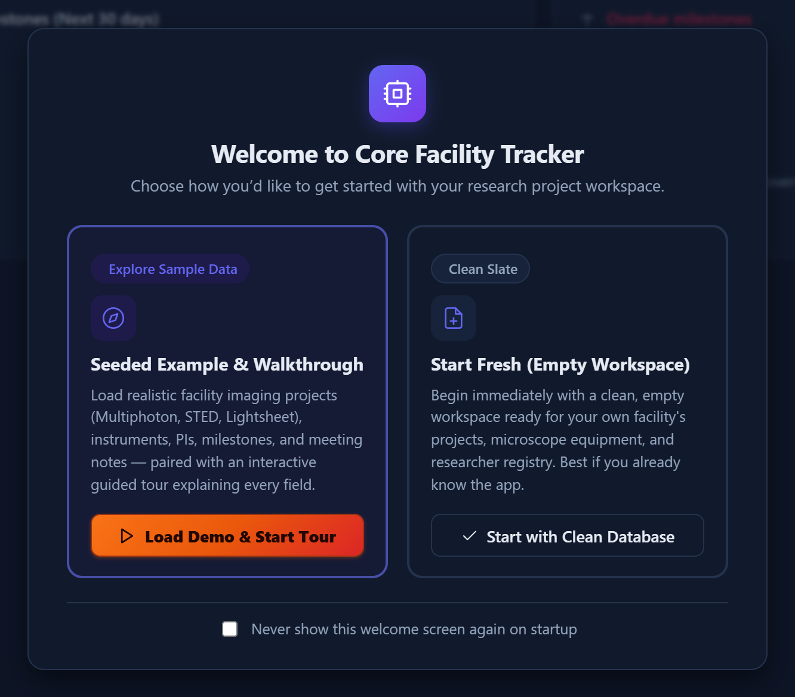
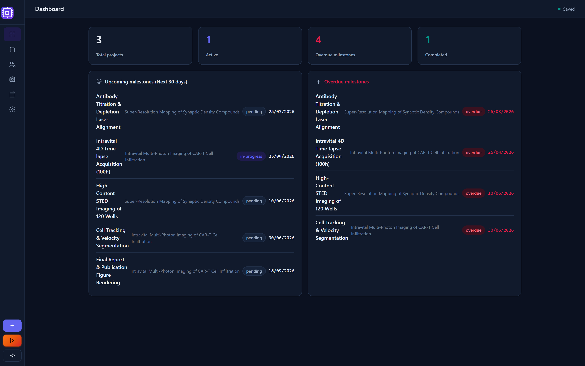
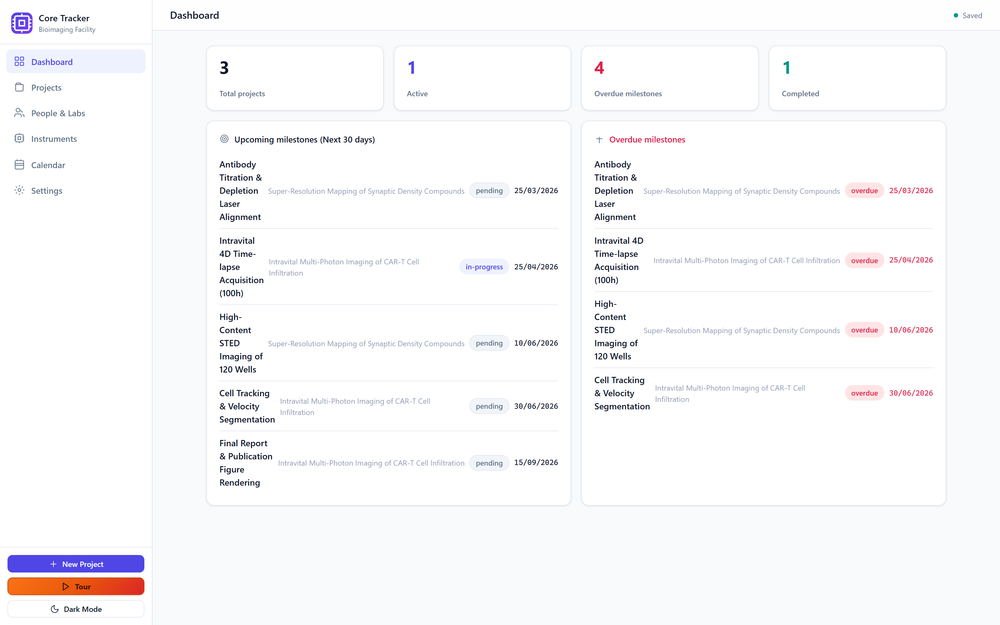

Chapter 1
Getting Started
Open the app for the first time, try it safely with sample data, and know what happens when you're ready to start for real.
What you'll be able to do
- Get past the welcome screen and choose the right option for you
- Load sample data to practice on, without risking anything real
- Run the guided tour to see every screen at a glance
- Start fresh with an empty tracker when you're ready
- Collapse the sidebar, switch theme, and use quick keyboard shortcuts
- Install the app so it opens like a normal program, and use it offline
- Know what to expect if you're on a tablet
The welcome screen
- Open the app in your browser. The first time you do this, a welcome window appears on top of everything else.
- Read the two choices it offers: Seeded Example & Walkthrough and Start Fresh.
- Pick Seeded Example & Walkthrough if this is your first time using the app — it fills the tracker with realistic example projects, people, and bookings, and then walks you through the screens.
- Pick Start Fresh only if you already know the app and want to begin with a completely empty tracker.
- If you don't want to see this screen again, tick Never show again before continuing. You can always bring it back later from Settings.

💡 Tip. The welcome screen also mentions where your data actually lives. It's worth reading once — see Your data lives here for the full explanation.
🔍 Why it works this way. A brand-new tracker with zero projects and zero people is a confusing thing to explore. Loading sample data first lets you click around, make "mistakes," and see what a fully-used tracker looks like — before you commit to your own real facility's information.
Loading sample data
The sample dataset is a small but realistic slice of a working facility: a handful of people (including a few marked as facility staff who get paid an hourly rate), a few instruments, a few projects, some milestones, and around ten bookings with real, already-calculated costs. Their dates are set relative to today, so screens like Reports always have something recent to show you.
- Choose Seeded Example & Walkthrough on the welcome screen, or
- Open Settings from the sidebar at any time and use Load Sample Data under "Sample Data & Walkthrough."
⚠️ Careful. Loading sample data adds it to whatever is already in your tracker — it does not erase your own projects. If you want to remove the sample data later and start clean, use Clear All Data in Settings (see Starting fresh below), or restore a backup you made before loading it. See Restore.
🧪 Try it. Load the sample data now, then open Projects from the sidebar. You should see a few example projects already sitting in the registry, each with its own progress bar. Nothing you do to these example records can affect a real facility, so click around freely.
The guided tour
The guided tour is a 19-step walkthrough that visits every major screen in the app and opens example dialogs so you can see them in action. While it's running, other clicks are blocked so you can't get lost — press Esc at any point to leave the tour early.
- Choose Seeded Example & Walkthrough on first launch to start the tour automatically, or
- Open Settings and click Launch Field Walkthrough at any time, or
- Click the Tour button in the sidebar footer.

Make yourself comfortable
A few small controls make the app more comfortable to live in day-to-day. None of them are required, but they're worth knowing from the start.
- Click the chevron button at the top of the sidebar to collapse it to a narrow icon rail, widening your working area — click it again to expand back.
- Click the appearance button in the sidebar footer to switch between light and dark theme. Your choice is remembered the next time you open the app.
- Press / anywhere outside a text box to jump straight into the search box on the screen you're viewing (Projects, People & Labs, or Instruments).
- Press Esc to close whatever dialog or modal is currently open, without needing to find a Cancel button.
- Use your browser's Back and Forward buttons to move between screens you've visited — each screen (Dashboard, Projects, a specific project, People & Labs, Instruments, Calendar, Reports, Settings) has its own address, so Back genuinely takes you to the previous screen instead of leaving the app.
- Bookmark or reload a screen directly — its address in the browser's bar reflects whatever screen you're looking at, so reloading the page (or opening a saved bookmark) returns you to that same screen rather than always starting over at the Dashboard.


💡 Tip. Collapsing the sidebar and switching theme are both purely visual — neither changes your data or where it's stored.
⚠️ Careful. Only the main screens get their own address — an open dialog (editing a booking, a confirmation, the guided tour) does not change the address bar. Reloading or going Back while a dialog is open takes you back to whichever screen sits behind it, not to that same dialog.
Starting fresh
Once you've practiced on sample data and understand the basics, you'll want a clean tracker for your real facility.
- Open Settings from the sidebar.
- Under "Sample Data & Walkthrough," click Clear All Data.
- Confirm when asked — this step is guarded precisely because it removes every project, person, instrument, milestone, and booking you currently have.
🔍 Why it works this way. Clearing wipes your content but deliberately keeps your setup — the vocabulary lists (statuses, roles, modalities), billing rates, and group discounts you've configured survive the clear. That way you don't have to rebuild your facility's settings just to get rid of practice data.
💡 Tip. There's no undo for clearing data. Export a backup first if there's anything in there you might want later — see Backups, Restore & Exports.
Installing the app
The tracker can be installed like a regular app on your computer or phone, so it opens in its own window (no address bar or browser tabs) and can keep working even without an internet connection, once it's been loaded at least once.
- Open the tracker in your browser, served over a normal web address (not by double-clicking the file) — installing needs a real address, not a local file.
- Look for an Install app or Add to Home Screen option in your browser's own menu (the exact wording and location vary by browser).
- Confirm the install. The tracker now opens from your desktop, start menu, dock, or home screen like any other app.
🔍 Why it works this way. Everything the app needs — its screens, its logic, your data — already lives in your browser once it's loaded, so it doesn't need a live connection to keep running. Installing just gives it its own window and icon; it doesn't change where your data is stored or share it anywhere new.
⚠️ Careful. After you install or update the app, reload it once so it can pick up the newest version — updates only take effect on a reload, not automatically mid-session.
Running on tablets
The tracker works on tablets, but some tablet browsers restrict how web pages store data, which can affect whether your entries are actually saved.
- Prefer opening the tracker from a real web address (served by a small local server or your facility's hosting) rather than opening the file directly on the tablet.
- Watch for a warning banner across the top of the screen. If it appears, the app is running in a temporary mode and nothing you enter will be kept once you close it.
- If you see that banner, finish what you're doing and use Export Backup (Settings) before closing the tab, so you don't lose your work.
🔍 Why it works this way. Some browsers — especially in private/incognito modes, or certain tablet apps — block the storage the tracker normally uses to remember your data between visits. Rather than fail silently, the app falls back to a temporary, memory-only session and tells you so, so you're never surprised by data that quietly vanished.
Check yourself
You just installed the tracker for a facility that already has real projects and staff. Should you click "Seeded Example & Walkthrough" on the welcome screen?
No — that loads sample data into your tracker alongside anything real that's there. If you already have real data, skip the welcome screen's sample option (or use Start Fresh), and instead read the manual or run the guided tour on its own from Settings.
You clear all data in Settings by mistake. Are your billing rates and status vocabulary gone too?
No. Clear All Data removes projects, people, instruments, milestones, and bookings, but keeps your configured vocabulary lists, billing rates, and group discounts intact.
You installed the app on your tablet as a PWA and see a banner saying your data will not be saved. What should you do before closing it?
Export a backup from Settings. The banner means the browser is not giving the app permanent storage, so anything you entered only survives if you export it before you close the tab.